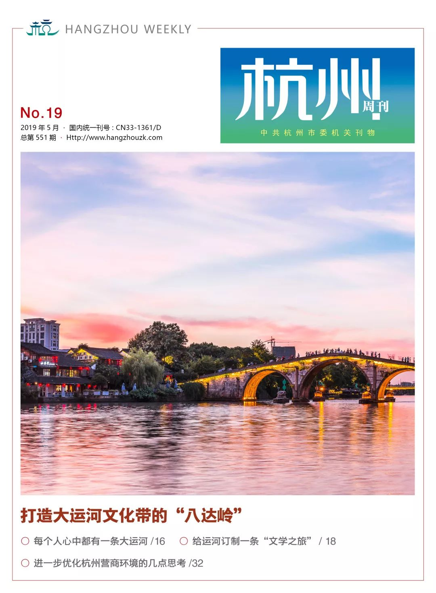

A quick overview of the new magazine | Grand Canal with the culture of the Badaling"
2019-06-10 17：29

The Grand Canal of China has a long history of 2500 years, is an extremely valuable national cultural heritage and world cultural heritage. It is not only a flowing history book, but also an important symbol of Chinese civilization, bearing the cultural memory of the Chinese nation.
In February 2019, the General Office of the Central Committee of the Communist Party of China and the General Office of the State Council issued the Outline of the Grand Canal Cultural Protection and Heritage Plan, which clarifies the direction, objectives and tasks of the construction of the Grand Canal Cultural Belt, marking the full start of the construction of the Grand Canal Cultural Belt as a national strategic work.
The construction of the Grand Canal Cultural Belt is a systematic project, which should not only pass on the historical charm, but also polish the gold signboards and expand the international influence, and also coordinate the protection of the relationship between inheritance and utilization. Only by innovating work ideas and methods, integrating and optimizing all kinds of resources, can we leave our precious heritage, and give new vitality and vitality.
Hangzhou is the Grand Canal, just as Badaling is the Great Wall. Hangzhou is the southern starting point of the Beijing-Hangzhou Grand Canal, and it is also the face of the Grand Canal. The Grand Canal in Hangzhou is 385.5 kilometers long and has an extremely rich connotation, containing a variety of political, economic, historical and cultural elements, including 11 World Heritage sites. After more than ten years of comprehensive protection and utilization, the Hangzhou section of the Grand Canal has become Hangzhou's urban brand and 4A-class scenic spots, many of which are popular with tourists, leisure consumption nodes, and become a red card point and photo resort; For the general public and tourists to provide more convenient, safer, more low-carbon way to travel, the formation of a special beautiful scenery in Hangzhou.
The proposal of the national strategy for the construction of the Grand Canal Cultural Belt has brought great opportunities to Hangzhou. To promote the construction of the Cultural Belt of the Grand Canal (Hangzhou section) is not only the glorious mission of Hangzhou, but also the responsibility of Hangzhou. Hangzhou will be in accordance with the provincial party deployment requirements, with China's Grand Canal World Heritage site as the main body, the overall protection and heritage of the use of Hangzhou Grand Canal culture, the standard Of the Great Wall, the same as Badaling, from the spatial pattern, cultural research, logo brands, international highlands, linkage platform and other aspects of focus, Strive to become the Grand Canal cultural belt in the most distinctive and well-known value display demonstration segment, and jointly create, lead and build the Grand Canal cultural belt of the "new era."